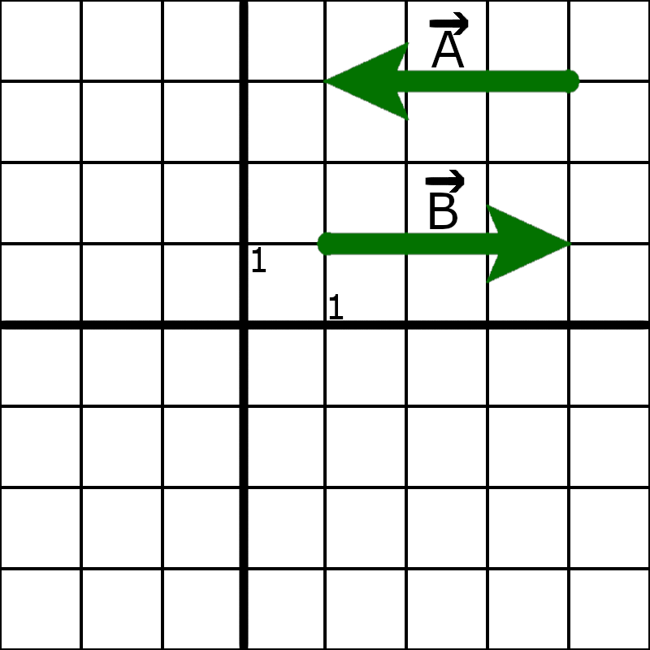

Jak nazywa się zaznaczony na czerwono element wektora?
Pytanie 2:
Kiedy dwa wektory są równe?
Pytanie 3:

Na rysunku przedstawione są wektory A i B, zaznacz fałszywe:
Pytanie 4:
Temperatura jest wartością skalarną
Pytanie 5:
Na rysunku przedstawione są wektory A i B, po dodaniu do siebie tych
wektorów dają wektor C, wektor ten będzie miał:
Pytanie 6:
Na rysunku w pytaniu numer 5, wektor C, będzie miał kąt względem osi X
równy:
Pytanie 7:
Przyspieszenie jest wartością skalarną
Pytanie 8:
Dany jest wektor A o punkcie zaczepienia (2, 0), końcu w punkcie (5,
0) i zwrocie w prawo, oraz wektor B o punkcie zaczepienia (3, 1),
końcu w punkcie (4, 1) i zwrocie w prawo. Dodając długość modułu
wektora B do wektora A, otrzymamy wektor C, który posiada: -Punkt
zaczepienia w punkcie (3, 0), długość modułu równą 4 i zwrocie w lewo.
Pytanie 9:
Uczeń siedzi na przystanku i podchodzi do niego kobieta, która pyta
"Do urzędu to w tym kierunku?", wskazując palcem w lewo. Uczeń na to
odpowiada "Tak, urząd jest w tym kierunku". Kobieta więc poszła w
lewo, ale droga do urzędu prowadzi w prawo. Czy uczeń skłamał?